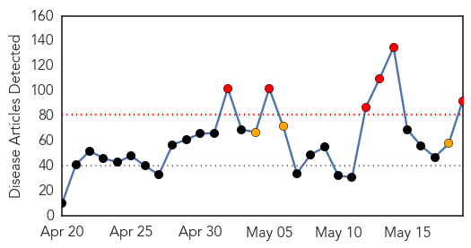
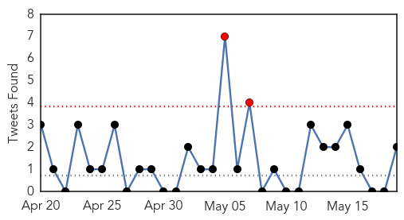

30 Day Trends
Web: 6 alerts, 3 warnings
Twitter: 2 alerts, 0 warnings
Top Articles:
- 0.999
- Cases of Deadly MERS Virus Reportedly in the US
- 0.999
- Pennsylvania health officials ready for MERS
- 0.999
- US reports third case of MERS virus - Headlines, features, photo and videos from ecns.cn
- 0.999
- MERS virus spread from one man to another in Illinois 'during business meeting with no more contact than a handshake'
- 0.999
- Politics News: CDC Resurrects SARS Handbook to Deal With MERS
- 0.998
- Third case of deadly MERS virus reported in US
- 0.998
- tribunedigital-orlandosentinel
- 0.998
- Third U.S. MERS case brings more questions than answers
- 0.997
- UPDATE 1-Illinois MERS patient 'not infectious'; Florida patient released
- 0.996
- MERS patient released from Central Florida hospital
- 0.995
- Illinois health officials say 3rd U.S. MERS case not infectious
- 0.995
- For MERS and Other Outbreaks, Costs and Safety May Keep Vaccines Out of Reach
- 0.995
- Pennsylvania prepares for possible MERS virus appearance
- 0.994
- Illinois health officials say 3rd US Mers case not infectious, United States News & Top Stories
- 0.992
- First MERS person-to-person transmission in US
- 0.991
- MERS now in 18 countries; three in U.S. confirmed to have viral illness
- 0.990
- Local Experts Weigh In On MERS Virus
- 0.989
- MERS contracted by businessman in the U.S.
- 0.989
- Local doctors not worried about MERS making it to Mid-Missouri
- 0.982
- Foreign doctors, nurses in Saudi Arabia could take MERS global
- 0.978
- New US MERS Case Has Health Officials on Alert
- 0.967
- Foreign doctors, nurses in Saudi Arabia could take MERS global: report
- 0.962
- Health officials say Siouxlanders have a low risk of contracting
- 0.948
- MERS Patient Released From Hospital
- 0.948
- Foreign doctors, nurses in Saudi Arabia could take MERS global
- 0.947
- Doctors, nurses in Saudi Arabia could make MERS global epidemic
- 0.947
- Florida MERS patient released from hospital
- 0.946
- MERS Patient Released From Orlando Hospital
- 0.946
- Globe-Trotting Doctors Spread MERS
- 0.946
- Globe-Trotting Doctors Spread MERS
- 0.938
- MERS patient from Saudi Arabia released from Florida hospital
- 0.938
- Foreign medics in Saudi Arabia could take Mers global
- 0.917
- Chicago Tribune
- 0.917
- Chicago Tribune
- 0.917
- Chicago Tribune
- 0.917
- Chicago Tribune
- 0.917
- Chicago Tribune
- 0.917
- Chicago Tribune
- 0.917
- Chicago Tribune
- 0.917
- Chicago Tribune
- 0.917
- Chicago Tribune
- 0.917
- Chicago Tribune
- 0.917
- Chicago Tribune
- 0.917
- Chicago Tribune
- 0.917
- Chicago Tribune
- 0.917
- Chicago Tribune
- 0.917
- Chicago Tribune
- 0.917
- Chicago Tribune
- 0.910
- Florida MERS patient released from hospital
- 0.910
- The world windows to Thailand
Showing top 50 articles...
Top Tweets:
- 0.595
- Dr. Mark Pallansch from CDC: More than 500 people contacted the US 2 MERS cases have been contacted and are being tested. ASM2014
- 0.566
- RT: Indiana's Dr. Judy Lovchik presents on the public health laboratory system response to first U.S. MERS case. asm2014 …
Web/News Articles
Tweets
Article Locations